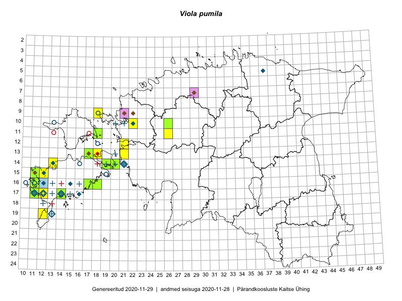

Viola pumila
Uuendatud: 2016-12-02
Kaardile koondatud taksonid: Viola pumila Chaix

Kaart põhineb 29 kirjel, neist vaatlusi 28 ja eksemplare 1. Taksonit on leitud 14 ruudust.
Kuvatud viited 20 esimesele andmebaasikirjele, ülejäänud PlutoFis
- Mari Reitalu: 2014-05-18: 15-11: ala
- Mari Reitalu, Triin Reitalu: 2015-05-28: 16-11: ala
- Triin Reitalu, Mari Reitalu: 2015-08-09: 16-11: ala
- Triin Reitalu, Mari Reitalu: 2015-08-10: 16-11: GPS punkt
- Mari Reitalu, Triin Reitalu: 2015-05-19: 17-11: ala
- Mari Reitalu, Triin Reitalu: 2015-08-05: 17-11: ala
- Aat Sarv: 2015-07-21: 11-26: ala
- Aat Sarv: 2015-05-31: 10-26: ala
- Aat Sarv: 2015-05-31: 11-26: ala
- Meeli Mesipuu, Timo Luhamäe: 2015-05-26: 11-18: ala
- Meeli Mesipuu: 2016-05-28: 11-18: GPS punkt
- Triin Reitalu, Mari Reitalu: 2015-08-05: 17-11: GPS punkt
- Triin Reitalu, Mari Reitalu: 2015-05-20: 17-11: GPS punkt
- Triin Reitalu, Mari Reitalu: 2015-05-28: 16-11: GPS punkt
- Mari Reitalu, Triin Reitalu: 2015-08-09: 16-11: ala
- Tõnu Ploompuu: 2015-08-21: 10-22: ala
- Tiit Hallikma, Ott Luuk: 2016-05-14: 12-21: GPS punkt
- Tõnu Ploompuu: 2015-05-20: 10-22: ala
- Mari Reitalu, Sirje Azarov: 2016-08-17: 14-20: ala
- Mari Reitalu, Triin Reitalu: 2016-08-14: 13-17: ala